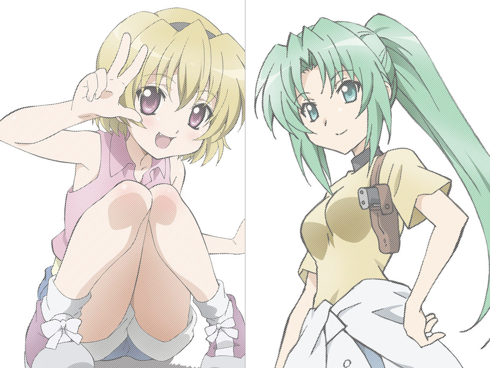
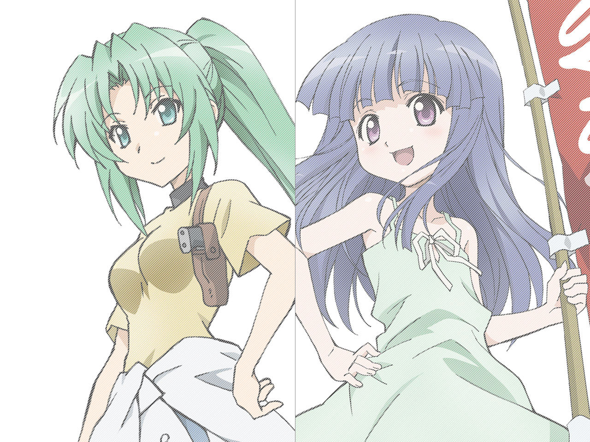
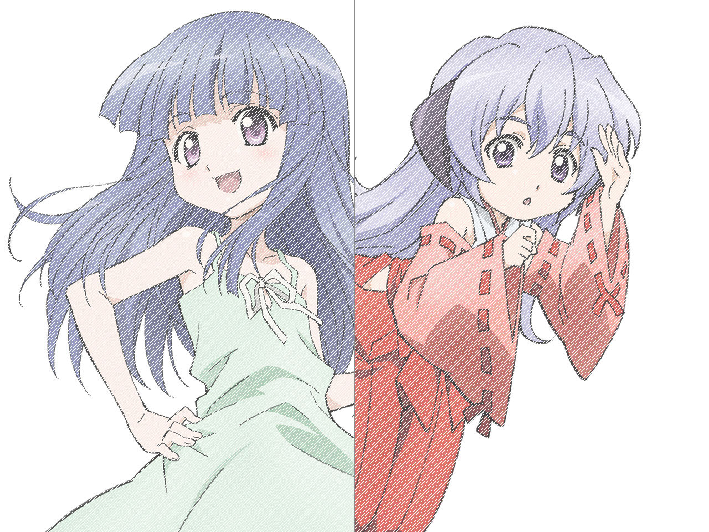
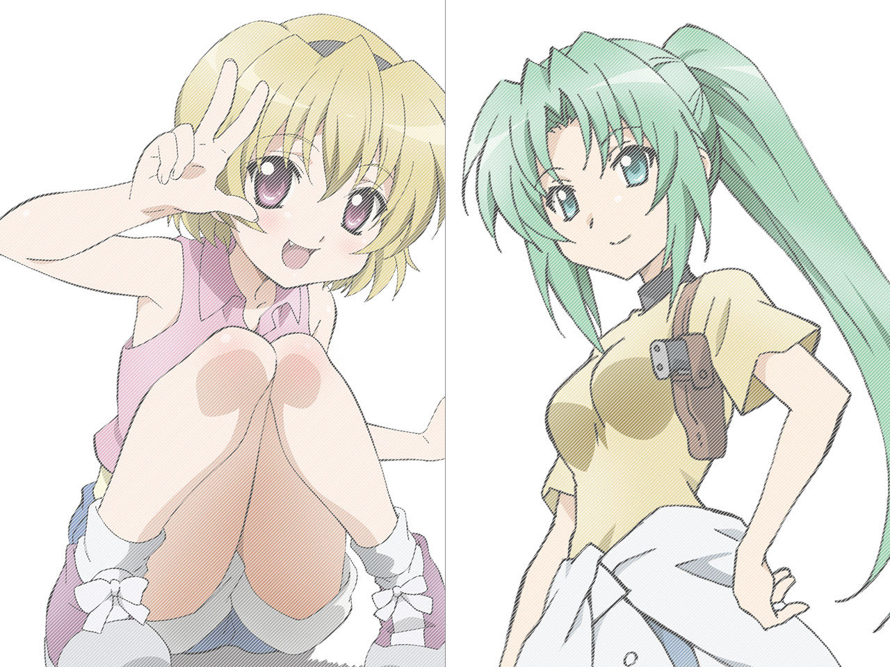
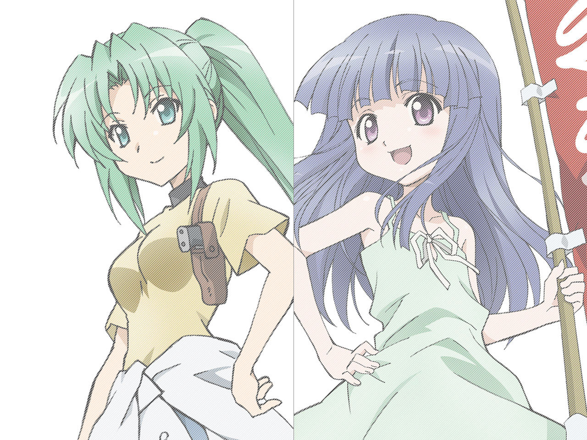
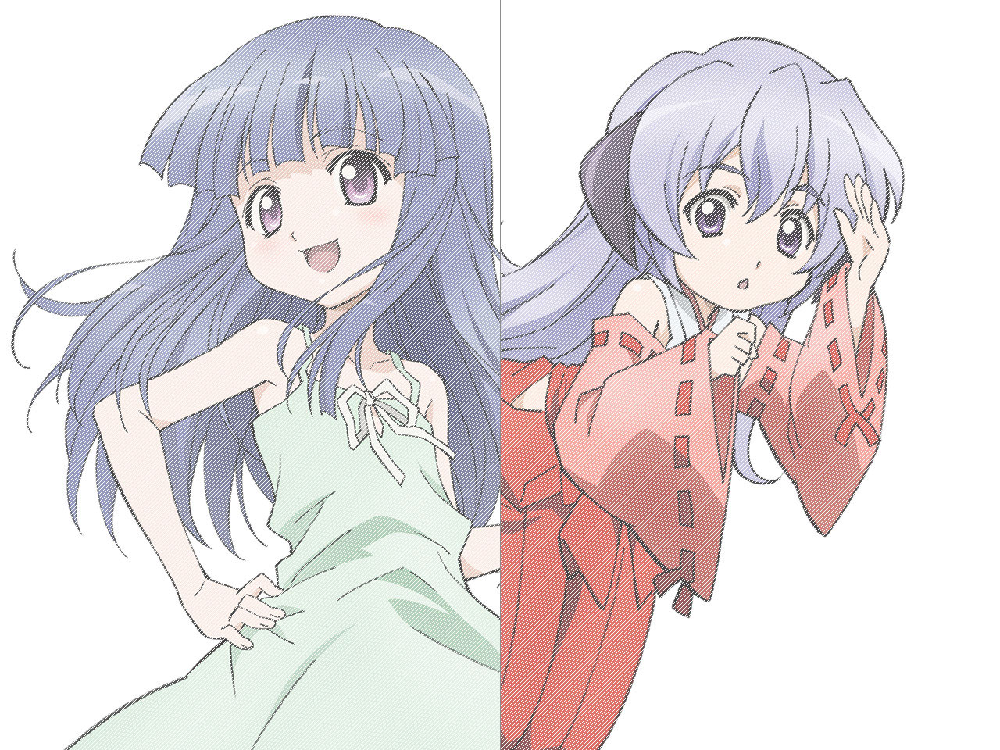

「ひぐらし」10周年記念作品
『ひぐらしのなく頃に煌』
原作シリーズの発表から2012年で10周年を迎えることを記念し、新シリーズがいよいよ始動！
完全オリジナルエピソードを中心に「喜(き)・努(ど)・愛(あい)・楽(らく)」に分かれたキラびやかなエピソードで贈る新シリーズ。従来からの原作ファンは勿論、10周年で初めて「ひぐらし」を知った方でも問題なくお楽しみ頂ける、想像の“斜め上”を突っ走る衝撃映像をご覧あれ!!
file.01 「罰恋し編 -喜-」
脚本：川瀬敏文 絵コンテ：橘秀樹 演出：加藤敏幸
作画監督：とみおかひろし／松尾亜希子
原作ゲーム「ひぐらしのなく頃に解」の『目明し編』お疲れ様会として制作された『罰恋し編』をアニメ用に再構築して映像化。
――“部活”で負けが込み、すっかり罰ゲームの常連に落ちぶれた圭一。その鬱憤を晴らすため、レナたち部活メンバーに、とんでもなく屈辱的な罰ゲームをやらせようと企むのだが…妄想渦巻く煩悩の果てに、どんな結末が待ち受けるのか!?

file.02「妖戦し編 -努-」
脚本：志茂文彦 絵コンテ：橘 秀樹 演出：園田雅裕 作画監督：阿部智之
――雛見沢にせまる新たな脅威、闇の魔法組織“東京マギカ”。
彼らと戦うため、梨花は魔法少女“オヤシロリカ”に変身する。
世界の命運をかけた衝撃の魔法大戦（マジックウォーズ）が幕を開ける！
file.03「結縁し編 -愛-」
恋愛前線接近中！ あなたも恋に落ちちゃう！？ドキドキストーリー☆
――ある日、ふとしたきっかけで圭一に恋心を頂いてしまった詩音。
詩音が圭一を抱擁するシーンを目撃してしまったレナと魅音。
恋する乙女３人の想いが、いま交錯する…
file.04「夢現し編 -楽-」
時を越え、雛見沢で出会う。OVA『ひぐらしのなく頃に煌』完結編
――今日の羽入はお留守番。一人で家事をこなす平穏なひととき。
そんな折、ひょんなことから時を越え現れた４歳の梨花。
はたして、羽入は無事に幼い梨花を元の世界に帰すことができるのか…
＜スタッフ＞
原作：竜騎士07／07th Expansion
監督：橘秀樹 シリーズ構成：川瀬敏文 キャラクターデザイン・総作画監督：阿部智之
アニメーション制作：スタジオディーン 製作：ひぐらしのなく頃に煌製作委員会
＜キャスト＞
前原圭一：保志総一朗
竜宮レナ：中原麻衣
園崎魅音・詩音：雪野五月
北条沙都子：かないみか
古手梨花：田村ゆかり
羽入：堀江由衣
＜主題歌＞
オープニングテーマ「Happy! Lucky! Dochy!」
歌：梨花（田村ゆかり）＆沙都子（かないみか）＆羽入（堀江由衣）
作詞：hotaru 作編曲：前澤寛之
エンディングテーマ「前代未聞☆ミラクルチェンジ」
歌 : file. 01 レナ(中原麻衣)／file. 02 梨花（田村ゆかり）＆沙都子（かないみか）
file. 03 魅音＆詩音(雪野五月)／file. 04 羽入（堀江由衣）
作詞：YUMIKO 作曲：野中勇希 編曲：DY-T